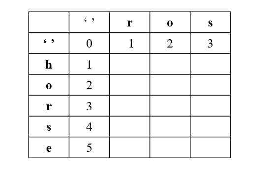

20.字符串算法 1.字符串基础知识 1.1 字符串定义 Are your strings immutable? – Daniel Lemire’s blog
Reading 9: Mutability & Immutability (mit.edu)
Python和Java的String是immutable的；immutable指不可变的，即定义了String后，就是不可变的，当增加字符和删减字母时，是新生成了一个字符串。
C++的String是可变的。
immutable优点：线程安全的，可以在多线程环境中使用
Python
Java
C++
1.2 遍历字符串 python
1 2 3 for ch in "abbc" : print (ch)
Java
1 2 3 4 5 6 7 8 String x = "abbc" ;for (int i = 0 ; i < x.size(); i++) { char ch = x.charAt(i); } for ch in x.toCharArray() { System.out.println(ch); }
C++
1 2 3 4 5 6 7 8 9 10 11 12 std::string x ("abbc" ) for (int i = 0 ; i < s1.l ength(); i++) cout << x[i]; } for (auto & ch : x) { std::cout << ch; } for (std::string::iterator it = x.begin (); it != str.end (); it++) { std::cout << *it; }
1.3 基础题目 （1）字符串中的第一个唯一字符 387. 字符串中的第一个唯一字符 - 力扣（LeetCode）
1 2 给定一个字符串 s ，找到 它的第一个不重复的字符，并返回它的索引 。如果不存在，则返回 -1 。
暴力方法：for i 0→len for j 0→len $O(n^2)$
map（hashmap, treemap）
hash array，使用一个简单数组
1 2 3 4 5 6 7 8 9 10 11 12 13 14 15 16 17 18 19 class Solution {public : int firstUniqChar (string s) std::unordered_map<int , int > str_map; for (auto & ch : s) { str_map[ch]++; } for (int i = 0 ; i < s.size (); i++) { char ch = s[i]; if (str_map[ch] == 1 ) { return i; } } return -1 ; } };
（2）字符串转换整数 8. 字符串转换整数 (atoi) - 力扣（LeetCode）
1 2 3 4 5 6 7 8 9 10 11 12 13 14 请你来实现一个 myAtoi(string s) 函数，使其能将字符串转换成一个 32 位有符号整数（类似 C/C++ 中的 atoi 函数）。 函数 myAtoi(string s) 的算法如下： 1.读入字符串并丢弃无用的前导空格 2.检查下一个字符（假设还未到字符末尾）为正还是负号，读取该字符（如果有）。 确定最终结果是负数还是正数。 如果两者都不存在，则假定结果为正。 3.读入下一个字符，直到到达下一个非数字字符或到达输入的结尾。字符串的其余部分将被忽略。 4.将前面步骤读入的这些数字转换为整数（即，"123" -> 123， "0032" -> 32）。如果没有读入数字，则整数为 0 。必要时更改符号（从步骤 2 开始）。 5.如果整数数超过 32 位有符号整数范围 [−231, 231 − 1] ，需要截断这个整数，使其保持在这个范围内。具体来说，小于 −231 的整数应该被固定为 −231 ，大于 231 − 1 的整数应该被固定为 231 − 1 。 6.返回整数作为最终结果。 注意： - 本题中的空白字符只包括空格字符 ' ' 。 - 除前导空格或数字后的其余字符串外，请勿忽略 任何其他字符。
1 2 3 4 5 6 7 8 9 10 11 12 13 14 15 16 17 18 19 20 21 22 23 24 25 26 27 28 29 30 31 32 33 34 35 36 37 38 39 40 41 42 class Solution {public : int myAtoi (string s) int len = s.size (); if (len == 0 ) { return 0 ; } int idx = 0 ; int is_negative = false ; int num_abs = 0 ; while (idx <= len && s[idx] == ' ' ) { idx++; } if (idx <= len && (s[idx] == '-' || s[idx] == '+' )) { is_negative = s[idx] == '-' ? true : false ; idx++; } while (idx < len) { int tmp = s[idx] - '0' ; if (tmp < 0 || tmp > 9 ) { break ; } if (INT_MAX / 10 < num_abs || INT_MAX / 10 == num_abs && INT_MAX % 10 < tmp) { return is_negative ? INT_MIN : INT_MAX; } num_abs = num_abs * 10 + tmp; idx++; } return is_negative ? -num_abs : num_abs; } };
（3）最长公共前缀 14. 最长公共前缀 - 力扣（LeetCode）
1 2 3 编写一个函数来查找字符串数组中的最长公共前缀。 如果不存在公共前缀，返回空字符串 "" 。
1 2 3 4 5 6 7 8 9 10 11 12 13 14 15 16 17 18 19 20 21 22 23 24 class Solution {public : string longestCommonPrefix (vector<string>& strs) { int word_num = strs.size (); if (word_num == 0 ) { return "" ; } for (int i = 0 ; i < strs[0 ].size (); i++) { char ch = strs[0 ][i]; for (int j = 1 ; j < word_num; j++) { if (i == strs[j].size () || ch != strs[j][i]) { return strs[0 ].substr (0 , i); } } } return strs[0 ]; } };
（4）字符串翻转 344. 反转字符串 - 力扣（LeetCode）
541. 反转字符串 II - 力扣（LeetCode）
1 2 3 4 给定一个字符串 s 和一个整数 k，从字符串开头算起，每计数至 2k 个字符，就反转这 2k 字符中的前 k 个字符。 如果剩余字符少于 k 个，则将剩余字符全部反转。 如果剩余字符小于 2k 但大于或等于 k 个，则反转前 k 个字符，其余字符保持原样。
1 2 3 4 5 6 7 8 9 10 11 class Solution {public : string reverseStr (string s, int k) { int n = s.length (); for (int i = 0 ; i < n; i += 2 * k) { reverse (s.begin () + i, s.begin () + min (i + k, n)); } return s; } };
（5）翻转字符串中的单词 151. 反转字符串中的单词 - 力扣（LeetCode）
557. 反转字符串中的单词 III - 力扣（LeetCode）
1 2 3 4 5 6 7 8 9 10 11 12 给你一个字符串 s ，请你反转字符串中 单词 的顺序。 单词 是由非空格字符组成的字符串。s 中使用至少一个空格将字符串中的 单词 分隔开。 返回 单词 顺序颠倒且 单词 之间用单个空格连接的结果字符串。 注意：输入字符串 s中可能会存在前导空格、尾随空格或者单词间的多个空格。返回的结果字符串中，单词间应当仅用单个空格分隔，且不包含任何额外的空格。 示例 1： 输入：s = "the sky is blue" 输出："blue is sky the"
1 2 3 4 5 6 给定一个字符串 s ，你需要反转字符串中每个单词的字符顺序，同时仍保留空格和单词的初始顺序。 示例 1： 输入：s = "Let's take LeetCode contest" 输出："s'teL ekat edoCteeL tsetnoc"
split， reverse，join
reverse整个string，然后在单独reverse每个单词
1 2 3 4 5 6 7 8 9 10 11 12 13 14 15 16 17 18 19 20 21 22 23 24 25 26 27 28 29 30 31 32 33 34 35 36 37 38 39 40 41 42 43 44 45 46 47 48 49 50 51 class Solution {public : string reverseWords (string s) { int str_len = s.size (); if (str_len == 0 ) { return "" ; } int left = 0 ; int right = s.size () - 1 ; std::string result; std::string word; while (left < str_len && s[left] == ' ' ) { left++; } while (right < str_len && s[right] == ' ' ) { right--; } while (left <= right) { char ch = s[left]; if (word.size () != 0 && ch == ' ' ) { if (result.size () == 0 ) { result = word; } else { result = word + " " + result;; } word = "" ; } else if (ch != ' ' ) { word += ch; } left++; } if (result.size () == 0 ) { result = word; } else { result = word + " " + result;; } return result; } };
1 2 3 4 5 6 7 8 9 10 11 12 13 14 15 16 17 18 19 20 21 22 23 24 25 26 27 28 29 30 31 32 33 34 35 36 37 38 39 40 41 42 43 44 45 46 47 48 49 50 51 52 53 54 55 56 class Solution {public : string reverseWords (string s) { int str_len = s.size (); if (str_len == 0 ) { return "" ; } int left = 0 ; int right = s.size () - 1 ; std::string result; std::string word; while (left < str_len && s[left] == ' ' ) { left++; } while (right < str_len && s[right] == ' ' ) { right--; } while (left <= right) { char ch = s[left]; if (word.size () != 0 && ch == ' ' ) { this ->resver_str (word); result = result + word + " " ; word = "" ; } else if (ch != ' ' ) { word += ch; } left++; } this ->resver_str (word); result = result + word; return result; } void resver_str (std::string& word) int low = 0 ; int high = word.size () - 1 ; while (low <= high) { char tmp = word[low]; word[low] = word[high]; word[high] = tmp; low++; high--; } } };
（6）找到字符串中所有字母异位词 438. 找到字符串中所有字母异位词 - 力扣（LeetCode）
1 2 3 4 5 6 7 8 9 10 11 给定两个字符串 s 和 p，找到 s 中所有 p 的 异位词 的子串，返回这些子串的起始索引。不考虑答案输出的顺序。 异位词 指由相同字母重排列形成的字符串（包括相同的字符串）。 输入: s = "cbaebabacd" , p = "abc" 输出: [0,6] 解释: 起始索引等于 0 的子串是 "cba" , 它是 "abc" 的异位词。 起始索引等于 6 的子串是 "bac" , 它是 "abc" 的异位词。
滑动窗口，看窗口中的单词是不是某个单词的异位词
1 2 3 4 5 6 7 8 9 10 11 12 13 14 15 16 17 18 19 20 21 22 23 24 25 26 27 28 29 30 31 32 33 34 35 36 37 38 39 40 41 42 43 44 class Solution {public : vector<int > findAnagrams (string s, string p) { int s_len = s.size (); int p_len = p.size (); if (s_len < p_len) { return std::vector <int >(); } std::vector<int > ans; std::vector<int > s_count (26 ) ; std::vector<int > p_count (26 ) ; for (int i = 0 ; i < p_len; i++) { s_count[s[i] - 'a' ]++; p_count[p[i] - 'a' ]++; } if (s_count == p_count) { ans.emplace_back (0 ); } for (int i = 0 ; i < s_len - p_len; i++) { s_count[s[i] - 'a' ]--; s_count[s[i + p_len] - 'a' ]++; if (s_count == p_count) { ans.emplace_back (i + 1 ); } } return ans; } };
（7）回文词判断 125. 验证回文串 - 力扣（LeetCode）
680. 验证回文串 II - 力扣（LeetCode）
1 2 3 4 5 如果在将所有大写字符转换为小写字符、并移除所有非字母数字字符之后，短语正着读和反着读都一样。则可以认为该短语是一个 回文串 。 字母和数字都属于字母数字字符。 给你一个字符串 s，如果它是 回文串 ，返回 true ；否则，返回 false 。
1 2 3 给你一个字符串 s，最多 可以从中删除一个字符。 请你判断 s 是否能成为回文字符串：如果能，返回 true ；否则，返回 false 。
1 2 3 4 5 6 7 8 9 10 11 12 13 14 15 16 17 18 19 20 21 22 23 24 25 26 27 28 29 30 31 class Solution {public : bool isPalindrome (string s) if (s.empty ()) { return 0 ; } int left = 0 ; int right = s.size () - 1 ; while (left < right) { while (left < right && !(std::isdigit (s[left]) || std::isalpha (s[left]))) { left++; } while (left < right && !(std::isdigit (s[right]) || std::isalpha (s[right]))) { right--; } if (std::tolower (s[left]) == std::tolower (s[right])) { left++; right--; } else { return false ; } } return true ; } };
在允许最多删除一个字符的情况下，同样可以使用双指针，通过贪心实现。初始化两个指针 left 和 right 分别指向字符串的第一个字符和最后一个字符。每次判断两个指针指向的字符是否相同，如果相同，则更新指针，将left + 1，right - 1，然后判断更新后的指针范围内的子串是否是回文字符串。
如果两个指针指向的字符不同，则两个字符中必须有一个被删除，此时就分成两种情况：
删除左指针对应的字符，留下子串 s[left+1 : right]
删除右指针对应的字符，留下子串 s[left : right−1]
当这两个子串中至少有一个是回文串时，就说明原始字符串删除一个字符之后就以成为回文串。
1 2 3 4 5 6 7 8 9 10 11 12 13 14 15 16 17 18 19 20 21 22 23 24 25 26 27 28 29 30 31 32 class Solution {public : bool validPalindrome (string s) if (s.size () == 0 ) { return true ; } int left = 0 ; int right = s.size () - 1 ; while (left < right) { if (s[left] == s[right]) { left++; right--; } else { return this ->check_palindrome (s, left + 1 , right) || this ->check_palindrome (s, left, right - 1 ); } } return true ; } bool check_palindrome (std::string s, int left, int right) for (int i = left, j = right; i < j; i++, j--) { if (s[i] != s[j]) { return false ; } } return true ; } };
（8）最长回文子串 5. 最长回文子串 - 力扣（LeetCode）
1 2 3 4 5 6 7 8 给你一个字符串 s，找到 s 中最长的回文子串。 如果字符串的反序与原始字符串相同，则该字符串称为回文字符串。 输入：s = "babad" 输出："bab" 解释："aba" 同样是符合题意的答案。
暴力求解 1 2 3 4 5 6 7 8 9 10 11 12 13 14 15 16 17 18 19 20 21 22 23 24 25 26 27 28 29 30 31 32 33 34 class Solution {public : string longestPalindrome (string s) { if (s.size () <= 1 ) { return s; } std::string ans; int max_len = 0 ; for (int i = 0 ; i < s.size () - 1 ; i++) { for (int j = i + 1 ; j < s.size (); j++) { std::string tmp_str = s.substr (i, j - i + 1 ); if (this ->check_palindrome (tmp_str) && tmp_str.size () > max_len) { ans = tmp_str; max_len = tmp_str.size (); } } } return ans; } bool check_palindrome (std::string& s) for (int i = 0 , j = s.size () - 1 ; i < j; i++, j--) { if (s[i] != s[j]) { return false ; } } return true ; } };
暴力 + 动态规划 去掉一些暴力解法中重复的判断。可以基于下边的发现，进行改进。
状态定义：P(i, j) = true, s[i,j]是回文串；P(i, j) = false, s[i,j]不是是回文串；
接下来$P(i,j)=(P(i+1,j−1) ~ \&\& ~ S[i]==S[j])$
所以如果想知道$P（i,j）$的情况，不需要调用判断回文串的函数了，只需要知道$P（i + 1，j - 1）$的情况就可以了，这样时间复杂度就少了 O(n)。因此可以用动态规划的方法，空间换时间，把已经求出的$ P（i，j） $存储起来。
1 2 3 4 5 6 7 8 9 10 11 12 13 14 15 16 17 18 19 20 21 22 23 24 25 26 27 28 29 30 31 32 33 34 35 36 37 class Solution {public : string longestPalindrome (string s) { int str_len = s.size (); if (str_len < 2 ) { return s; } std::vector<std::vector<bool >> dp (str_len, std::vector <bool >(str_len)); int max_len = 0 ; int begin = 0 ; for (int len = 1 ; len <= str_len; len++) { for (int start = 0 ; start < str_len; start++) { int end = start + len - 1 ; if (end >= str_len) { break ; } dp[start][end] = s[start] == s[end] && (len == 1 || len == 2 || dp[start + 1 ][end - 1 ]); if (dp[start][end] && len > max_len) { max_len = len; begin = start; } } } return s.substr (begin, max_len); } };
中心扩散 回文串一定是对称的，所以可以每次循环选择一个中心，进行左右扩展，判断左右字符是否相等即可。
由于存在奇数的字符串和偶数的字符串，所以需要从一个字符开始扩展，或者从两个字符之间开始扩展，所以总共有 n+n-1 个中心。
1 2 3 4 5 6 7 8 9 10 11 12 13 14 15 16 17 18 19 20 21 22 23 24 25 26 27 28 29 30 31 32 33 class Solution {public : string longestPalindrome (string s) { int len = s.size (); if (len < 2 ) { return s; } for (int i = 0 ; i < len - 1 ; i++) { this ->extend_palindrome (s, i, i); this ->extend_palindrome (s, i, i + 1 ); } return s.substr (m_start, m_max_len); } void extend_palindrome (std::string& s, int left, int right) while (left >= 0 && right < s.size () && s[left] == s[right]) { left--; right++; } if (m_max_len < right - left - 1 ) { m_start = left + 1 ; m_max_len = right - left - 1 ; } } private : int m_start; int m_max_len; };
2.高级字符串算法 2.1 最长子串、子序列 （1）编辑距离 72. 编辑距离 - 力扣（LeetCode）
1 2 3 4 5 6 7 给你两个单词 word1 和 word2， 请返回将 word1 转换成 word2 所使用的最少操作数 。 你可以对一个单词进行如下三种操作： - 插入一个字符 - 删除一个字符 - 替换一个字符
BFS + 剪枝（单词的长度范围）
DP
状态定义：dp[0..i][0..j]， i表示第一个字符串匹配到第二个字符串的长度；j表示第二个字符串匹配到第一个字符串的长度；word1.substr(0, i) 与 word2.substr(0, j)之间的编辑距离
w1和w2的最后一个字符一样
w1 : …x (i)
edit_dist(w1, w2) = edit_dist(w1[0 : i -1], w2[0, j - 1])
edit_dist(i, j) = edit_dist(i - 1, j - 1)
w1和w2的最后一个字符不一样
w1 : …x (i)
edit_dist(i, j) = ``min``(edit_dist(i - 1, j - 1) + 1 , edit_dist(i - 1, j ) + 1, edit_dist(i, j - 1) + 1)
edit_dist(i - 1, j - 1) + 1 : 替换，编辑距离 + 1edit_dist(i - 1, j) + 1 : 删除word1最后一个字符， 编辑距离 + 1edit_dist(i , j - 1) + 1 : 删除 word2最后一个字符，编辑距离 + 1
注意，针对第一行，第一列要单独考虑，我们引入 '' 下图所示：

第一行，是 word1 为空变成 word2 最少步数，就是插入操作
第一列，是 word2 为空，需要的最少步数，就是删除操作
（2）最长公共子序列 1143. 最长公共子序列 - 力扣（LeetCode）
1 2 3 4 5 6 给定两个字符串 text1 和 text2，返回这两个字符串的最长 公共子序列 的长度。如果不存在 公共子序列 ，返回 0 。 一个字符串的 子序列 是指这样一个新的字符串：它是由原字符串在不改变字符的相对顺序的情况下删除某些字符（也可以不删除任何字符）后组成的新字符串。 - 例如，"ace" 是 "abcde" 的子序列，但 "aec" 不是 "abcde" 的子序列。 两个字符串的 公共子序列 是这两个字符串所共同拥有的子序列。
注意分区子序列和子串：子序列可以有间隔，子串没有间隔
状态定义：dp[0..i][0..j]， i表示第一个字符串匹配到第二个字符串的长度；j表示第二个字符串匹配到第一个字符串的长度；word1.substr(0, i) 与 word2.substr(0, j)之间的最长公共子序列
状态方程：
1 2 3 4 5 if s1[i - 1 ] == s2[i - 1 ]: dp[i][j] = dp[i - 1 ][j - 1 ] + 1 else : dp[i][j] = max (dp[i - 1 ][j], dp[i][j - 1 ])
1 2 3 4 5 6 7 8 9 10 11 12 13 14 15 16 17 18 19 20 21 22 23 24 25 class Solution {public : int longestCommonSubsequence (string text1, string text2) int m = text1. size (); int n = text2. size (); if (m == 0 || n == 0 ) { return 0 ; } std::vector<std::vector<int >> dp (m + 1 , std::vector <int >(n + 1 , 0 )); for (int i = 1 ; i <= m; i++) { for (int j = 1 ; j <= n; j++) { if (text1. at (i - 1 ) == text2. at (j - 1 )) { dp[i][j] = dp[i - 1 ][j - 1 ] + 1 ; } else { dp[i][j] = std::max (dp[i][j - 1 ], dp[i - 1 ][j]); } } } return dp[m][n]; } };
（3）最长公共子串 LeetCode没有题目
1 2 最长公共子串，是指两个字符串中最长连续相同的子串长度。 例如：str1=“1AB2345CD”,str2=”12345EF”,则str1，str2的最长公共子串为2345。
状态定义：dp[0..i][0..j]， i表示第一个字符串匹配到第二个字符串的长度；j表示第二个字符串匹配到第一个字符串的长度；word1.substr(0, i) 与 word2.substr(0, j)之间的最长公共子串
状态方程：
1 2 3 4 5 if s1[i - 1 ] == s2[i - 1 ]: dp[i][j] = dp[i - 1 ][j - 1 ] + 1 else : dp[i][j] = 0
1 2 3 4 5 6 7 8 9 10 11 12 13 14 15 16 17 18 19 20 21 22 23 24 25 26 class Solution {public : int longestCommonSubstring (string text1, string text2) int m = text1. size (); int n = text2. size (); if (m == 0 || n == 0 ) { return 0 ; } std::vector<std::vector<int >> dp (m + 1 , std::vector <int >(n + 1 , 0 )); for (int i = 1 ; i <= m; i++) { for (int j = 1 ; j <= n; j++) { if (text1. at (i - 1 ) == text2. at (j - 1 )) { dp[i][j] = dp[i - 1 ][j - 1 ] + 1 ; } else { dp[i][j] = 0 ; } } } return *max_elemen (dp.begin (),dp.end ()) } };
2.2 字符串 + 递归 or DP （1）正则表达式匹配 10. 正则表达式匹配 - 力扣（LeetCode）
动态规划解法，只需关注「匹配」和「不匹配」即可
1 2 3 4 5 6 7 8 9 10 11 12 给你一个字符串 s 和一个字符规律 p，请你来实现一个支持 '.' 和 '*' 的正则表达式匹配。 - '.' 匹配任意单个字符 - '*' 匹配零个或多个前面的那一个元素 所谓匹配，是要涵盖 整个 字符串 s的，而不是部分字符串。 示例 2: 输入：s = "aa" , p = "a*" 输出：true 解释：因为 '*' 代表可以匹配零个或多个前面的那一个元素, 在这里前面的元素就是 'a' 。因此，字符串 "aa" 可被视为 'a' 重复了一次。
1）两个字符串匹配 如果是两个普通字符串，如何进行匹配？
1 2 3 4 5 6 7 8 9 bool isMatch (string text, string pattern) if (text.size () != pattern.size ()) return false ; for (int j = 0 ; j < pattern.size (); j++) { if (pattern[j] != text[j]) return false ; } return true ; }
将上述改写为递归的形式：
1 2 3 4 5 6 def isMatch (text, pattern ) -> bool : if pattern is empty: return text is empty first_match = (text not empty) and pattern[0 ] == text[0 ] return first_match and isMatch(text[1 :], pattern[1 :])
2）处理点号 ·通配符 点号可以匹配任意一个字符，修改上面伪代码：
1 2 3 4 5 6 def isMatch (text, pattern ) -> bool : if not pattern: return not next first_match = bool (text) and pattern[0 ] in {text[0 ], '.' } return first_match and isMatch(text[1 :], pattern[1 :])
3）处理 * 通配符 星号通配符可以让前一个字符重复任意次数，那到底重复几次？
1 2 3 4 5 6 7 def isMatch (text, pattern ) -> bool : if not pattern: return not next first_match = bool (text) and pattern[0 ] in {text[0 ], '.' } if len (pattern) >= 2 and pattern[1 ] == '*' : return first_match and isMatch(text[1 :], pattern[1 :])
星号前面的字符到底要重复几次呢？不管重复几次，当前的选择只有两个：匹配0次、匹配1次，所以可以这样处理：
1 2 3 4 5 6 7 8 if len (pattern) >= 2 and pattern[1 ] == '*' : return isMatch(test, pattern[2 :]) or \ first_mactch and isMatch(text[1 :], pattern)
可以看到，通过保留pattern中的*，同时向后推移text，来实现*将字符重复多次的功能。
4）动态规划 选择使用备忘录的递归方法来降低复杂度
1 2 3 4 5 6 7 8 9 10 11 12 13 14 15 16 17 18 19 20 21 22 23 24 25 26 27 28 29 30 31 32 33 34 35 36 37 38 39 40 41 42 43 44 45 46 47 48 49 50 51 52 class Solution {public : bool isMatch (string s, string p) m_memo = std::vector<std::vector<int >>(s.size () + 1 , std::vector <int >(p.size () + 1 , -1 )); return this ->recur (s, p, 0 , 0 ); } bool recur (std::string& s, std::string& p, int s_idx, int p_idx) if (p_idx == p.size ()) { return s_idx == s.size (); } if (m_memo[s_idx][p_idx] != -1 ) { return m_memo[s_idx][p_idx]; } bool res = false ; bool first_match = false ; if (s_idx < s.size ()) { if (s[s_idx] == p[p_idx] || p[p_idx] == '.' ) { first_match = true ; } } if ((p_idx + 1 ) < p.size () && p[p_idx + 1 ] == '*' ) { res = this ->recur (s, p, s_idx, p_idx + 2 ) || (first_match && this ->recur (s, p, s_idx + 1 , p_idx)); } else { res = first_match && this ->recur (s, p, s_idx + 1 , p_idx + 1 ); } m_memo[s_idx][p_idx] = res; return res; } private : std::vector<std::vector<int >> m_memo; };
（2）不同的子序列 115. 不同的子序列 - 力扣（LeetCode）
1 2 3 4 5 6 7 8 9 10 给你两个字符串 s 和 t ，统计并返回在 s 的 子序列 中 t 出现的个数，结果需要对 10^9 + 7 取模。 输入：s = "rabbbit" , t = "rabbit" 输出：3 解释： 如下所示, 有 3 种可以从 s 中得到 "rabbit" 的方案。 rabbbit rabbbit rabbbit
状态定义：dp[i][j]代表T的前i字符可以由S前j字符串组成的最多个数
动态方程：
当s[j] == t[i]，dp[i][j] = dp[i-1][j-1] + dp[i][j-1]
当s[j] != t[i]， dp[i][j] = dp[i][j-1]
对于第一行, T 为空,因为空集是所有字符串子集, 所以我们第一行都是 1
对于第一列, S 为空,这样组成 T 个数当然为 0` 了
1 2 3 4 5 6 7 8 9 10 11 12 13 14 15 16 17 18 19 20 21 22 23 24 25 class Solution {public : int numDistinct (string s, string t) int m = t.size (); int n = s.size (); std::vector<std::vector<int >> dp (m + 1 , std::vector <int >(n + 1 , 0 )); for (int j = 0 ; j <= n; j++) { dp[0 ][j] = 1 ; } for (int i = 1 ; i <= m; i++) { for (int j = 1 ; j <= n; j++) { if (t[i - 1 ] == s[j - 1 ]) { dp[i][j] = dp[i - 1 ][j - 1 ] + dp[i][j - 1 ]; } else { dp[i][j] = dp[i][j - 1 ]; } } } return dp[m][n]; } };
3.字符串匹配算法 3.1 暴力法 1 2 3 4 5 6 7 8 9 10 11 12 13 14 15 16 17 int forceSearch (std::string txt, std::string pat) int M = txt.size (); int N = pat.size (); for (int i = 0 ; i <= M - N; i++) { int j; for (j = 0 ; j < N; j++) { if (txt[i + j] != pat[j]) break ; } if (j == N) { return i; } } return -1 ; }
更加聪明？
Rabin-Karp：预先判断 hash(txt.substr(i, M)) == hash(pat)
KMP：已经匹配的片段中，它的最大前缀和最大后缀
3.2 Rabin-Karp算法 在朴素算法中，我们需要挨个比较所有字符，才知道目标字符串中是否包含子串。那么，是否有别的方法可以用来判断目标字符串是否包含子串呢?
答案是肯定的，确实存在一种更快的方法。为了避免挨个字符对目标字符串和子串进行比较，我们可以尝试一次性判断两者是否相等 。因此，我们需要一个好的哈希函数 (hash function) 。 通过哈希函数，我们可以算出子串的哈希值，然后将它和目标字符串中的子串的哈希值进行比较 。 这个新方法在速度上比暴力法有显著提升。
算法思想：
假设子串的长度为 M(pat)，目标字符串的长度为 N(txt)
计算子串的hash值hash_pat
计算目标字符串txt中每个长度为M的子串的hash值（共需要计算 N-M+1次）
比较hash值：如果hash值不同，字符串必然不匹配；如果hash值相同，还需要使用朴素算法再次判断
1 2 3 4 5 6 7 8 9 10 11 12 13 14 15 16 17 18 19 20 21 22 23 24 25 26 27 28 29 30 31 32 33 34 35 public final static int D = 256 ;public final static int Q = 9997 ;static int RabinKarpSerach (String txt, String pat) { int M = pat.length(); int N = txt.length(); int i, j; int patHash = 0 , txtHash = 0 ; for (int i = 0 ; i < M; i++) { pathHash = (D * patHash + pat.charAt(i)) % Q; txtHash = (D * txtHash + txt.charAt(i)) % Q; } int highestPow = 1 ; for (i = 0 ; i < M - 1 ; i++) highestPow = (highestPow * D) % Q; for (i = 0 ; i <= N - M; i++) { if (pathHash == txtHash) { for (j = 0 ; j < M; j++) { if (txt.charAt(i + j) != pat.charAt(j)) break ; } if (j == M) return i; } if (i < N - M) { txtHash = (D * (txtHash - txt.charAt(i) * highestPow) + txt.charAt(i + m)) % Q; if (txtHash < 0 ) txtHash += Q; } } return -1 ; }
3.3 KMP算法
KMP算法 (Knuth-Morris-Pratt) 的思想就是，当子串与目标字符串不匹配时，其实你已经知道了前面已经匹配成功那 一部分的字符 (包括子串与目标字符串)。以阮一峰的文章为例，当空格与 D 不匹配时，你其实 知道前面六个字符是“ABCDAB”。
KMP 算法的想法是，设法利用这个已知信息，不要把“搜索位置”移回已经比较过的位置，继续把它向后移，这样就提高了效率 。
3.4 其他 （1）Boyer-Moore算法 BM算法核心思想是，利用模式串本身的特点，在模式串中某个字符与主串不能匹配的时候，将模式串往后多滑动几位，以此来减少不必要的字符比较，提高匹配的效率。
（2）Sunday算法